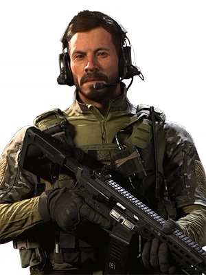

CHARACTER INFORMATION

Not much is known about "Alex"'s early life and history. Also known by the callsign "Echo 3-1", Alex served in the Delta Force before surrendering his former rank and history of special ops military service to the Special Activities Division of the CIA in 2013.
During the next six years in the SAD, Alex lived a series of assumed identities to achieve "sensitive" objectives wherever he is needed, often operating autonomously, training, advising and arming allies to act as interpreters, pathfinders and soldiers. Alex valued direct contact with local militias where he can track both allied and enemy intentions to help advise appropriate action.
His mission profiles included counter-insurgency, special reconnaissance, counterterrorism, information warfare and anti-proliferation of weapons of mass destruction. The tools of his trade were laptops, light machine guns, sat-phones, and rocket-equipped combat drones. Alex also led small teams, trained to infiltrate enemy lines and survive inhospitable conditions in hostile locations.
Through 2017, Alex's and his teams played key roles in ensuring definitive victories against emerging terrorist networks. As the SAD is permitted to execute missions against enemies of the state, without consulting the Pentagon or White House, Echo 3-1 has been involved in multiple actions to assassinate enemy leadership.